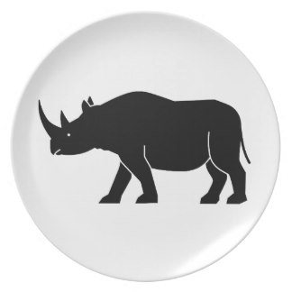

Endangered but not yet Extinct, the Rhino species are Critically Endangered. But there is still HOPE for the survival of their species if we take ACTION.
Find out moreRhinos are one of the oldest groups of mammals, virtually living fossils. They play an important role in their habitats and in countries like Namibia, rhinos are an important source of income from ecotourism. The protection of black rhinos creates large blocks of land for conservation purposes. This benefits many other species, including elephants.
Yes. Earth is already showing many signs of worldwide climate change.
Today, all five species of rhinos are perilously close to extinction. The rate of their decline is truly astounding: in the decade of the 1970s alone, half the world’s rhino population disappeared. Today, less than 15 per cent of the 1970 population remains, an estimated 10,000 to 11,000 worldwide.
The Javan and Sumatran rhinos are near extinction. Indian rhinos may be coming back from the brink. Of the two African species, the white rhino has rebounded from near extinction. (Contrary to its name, the white rhino is not really white. Its name is a mistaken translation of the Dutch word “wijde,” which means “wide” and refers to the rhino’s broad, square lips.)
The black rhino has not fared so well. As recently as 1970, an estimated 65,000 black rhinos could be found throughout sub-Saharan Africa. But in eastern Africa, 90 percent of them were killed in the 1970s. Now there are fewer than 2,500 left, in pockets in Zimbabwe, South Africa, Kenya, Namibia, and Tanzania.
The black rhino grows to 14 feet (four meters) long, stands over 4.5 feet (1 meter) at the shoulder, and weighs up to 3,900 pounds (1770 kg). It is recognizable by its long, pointed, prehensile upper lip and two prominent horns, the longest of which averages 20 inches (50 cm). The horn is made up of millions of tightly compacted hairlike fibers.
The black rhino is a formidable herbivore. It inhabits bush country with thick cover, grasslands, or open forest, where it browses on a wide variety of plants.
Do your part today, with your help, Our organization can continue with critical programs like providing necessary training and equipment to wildlife scouts; instituting large-scale, public-awareness campaigns; and supporting wildlife authorities. Donate for a cause that will help with wildlife conservation and ensure the survival of this endangered species.
